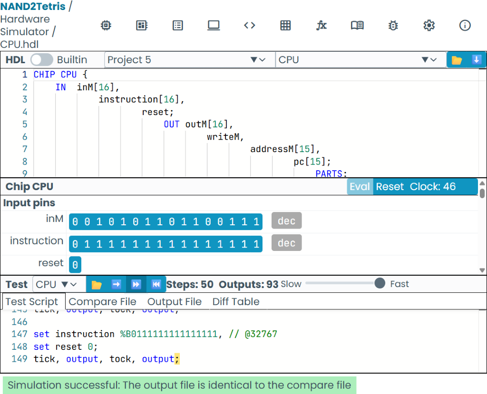
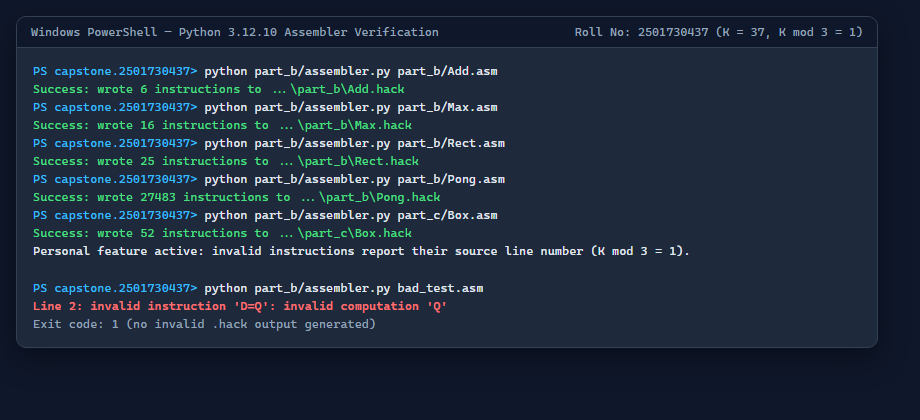

The goal of this capstone is to connect the Hack hardware platform, a custom Python two-pass assembler, and a Hack assembly program (Box.asm) so the Hack computer draws a black rectangular box on the screen while any key is pressed and clears it when the key is released.
| Parameter | Calculation (Roll No. 2501730437) | Value Used |
|---|---|---|
Personal number K | Last two digits of 2501730437 | 37 |
| Assembler extra feature | 37 mod 3 = 1 | Line-numbered error reporting without crashing |
| Box height & start row | Starts at row K, 20 rows tall | Rows 37 to 56 (height 20) |
| Box width | 16 × ((37 mod 4) + 1) = 16 × 2 | 32 pixels (2 consecutive 16-bit words/row) |
| Start RAM word address | SCREEN + 32 × 37 = 16384 + 1184 | 17568 |
The Hack computer integrates three top-level HDL chips located in part a/ alongside the foundational gates, ALU, registers, RAM, and PC chips:
CPU.hdl: Decodes A-instructions (instruction[15]=0) and C-instructions (instruction[15]=1), routes ARegister, DRegister, and Mux16 into the ALU, drives writeM, and evaluates ng/zr jump bits to control PC.Memory.hdl: Maps the 15-bit address across RAM16K (0x0000–0x3FFF), Screen (0x4000–0x5FFF), and Keyboard (0x6000) via DMux4Way, Or, and Mux4Way16.Computer.hdl: Connects ROM32K, CPU, and Memory controlled by the external reset pin.
Built-in Chips Note: ARegister, DRegister, Screen, Keyboard, and ROM32K are Project 5 built-in chips. During simulation in the Nand2Tetris Web IDE, standard sub-chips (ALU, PC, Mux16, And, Or, Not) also used the simulator's built-in definitions.

Memory.tst on Memory.hdl.ComputerAdd.tst on Computer.hdl.ComputerMax.tst on Computer.hdl.ComputerRect.tst on Computer.hdl.assembler.py)
The Python assembler (part_b/assembler.py) converts Hack assembly (.asm) into 16-bit binary machine code (.hack) in two passes:
clean_source & labels): Reads lines with enumerate(..., 1) to retain exact source line numbers, strips // comments and blank lines, validates (LABEL) declarations against duplicates/reserved names, and records each label's ROM address.@symbol or numeric constant, allocating new variables from RAM 16 upward) and C-instructions (111 + comp + dest + jump).K mod 3 = 1): Any invalid destination, computation, jump, symbol, or out-of-range constant raises AssemblyError formatted as Line <N>: invalid instruction '<code>': <reason> and exits with status 1 without writing invalid .hack output.
assembler.py on Add.asm (6), Max.asm (16), Rect.asm (25), Pong.asm (27,483), Box.asm (52), and bad_test.asm (line-numbered error on Line 2).| Program | Lines Assembled | Status in assembler.py | Official Assembler Comparison |
|---|---|---|---|
Add.asm | 6 instructions | Assembled cleanly (Add.hack) | Pending official assembler diff |
Max.asm | 16 instructions | Assembled cleanly (Max.hack) | Pending official assembler diff |
Rect.asm | 25 instructions | Assembled cleanly (Rect.hack) | Pending official assembler diff |
Pong.asm | 27,483 instructions | Assembled cleanly (Pong.hack) | Pending official assembler diff |
Box.asm & Box.hack)
part_c/Box.asm continuously polls the keyboard memory map at @KBD (24576) in (START):
M != 0): Jumps to (DRAW), sets screen pointer R13 = 17568 and row counter R14 = 20, then in (DRAW_LOOP) writes -1 (16 black pixels) to RAM[R13] and RAM[R13+1] (32 pixels wide), increments R13 by 32 words to advance one row, and repeats for 20 rows.M == 0): Jumps to (CLEAR) and writes 0 (white) to the exact same 2 × 20 screen words before looping back to (START).
Assembling Box.asm with part_b/assembler.py produced the 52-line binary file part_c/Box.hack.
Box.hack in CPU Emulator, hold a key, and insert screenshot showing the 32×20 black box at row 37.Box.asm, adding the row index K = 37 directly to SCREEN (16384 + 37 = 16421) draws pixels horizontally along row 1 instead of starting at row 37, because each 512-pixel screen row spans 512 / 16 = 32 consecutive memory words. I fixed this by computing the row start address as SCREEN + (32 × 37) = 17568 and updating the row loop pointer R13 by +32 after writing the two horizontal words (M=-1; A=A+1; M=-1) per row, ensuring the 32×20 box appears accurately at row 37 along the left edge.
This capstone integrates the Hack hardware design (CPU.hdl, Memory.hdl, Computer.hdl), a custom two-pass Python assembler with line-numbered diagnostics (K mod 3 = 1), and memory-mapped I/O programming in Box.asm tailored to K = 37. Verification of CPU.tst and the Python assembler passed as recorded above; the remaining simulator screenshots can be inserted into the marked slots above prior to final ZOSIMA upload.